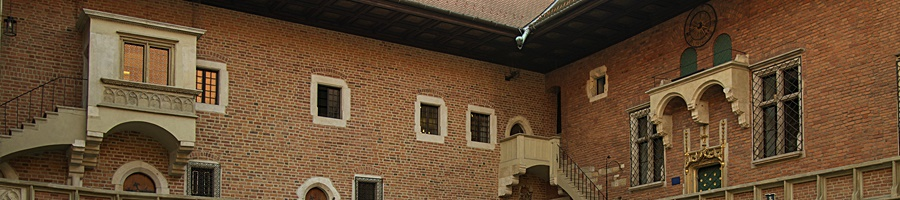

WYBÓR TRASY ZWIEDZANIA
Szanowni Państwo!
Oferujemy Państwu możliwość dokonania samodzielnej rezerwacji i zakupu biletu wstępu do Muzeum UJ:
- w dni robocze od poniedziałku do piątku (w soboty zwiedzanie bezpłatne, bez przewodnika; w niedziele i święta Muzeum UJ zamknięte)
- w języku polskim lub angielskim o ustalonych godzinach wejść na ekspozycję